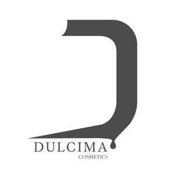

Trade Mark Journal No.2026/009 27 February 2026
UK00004307594 9 December 2025 (3)

- Class 3
- Non-medicated cosmetics and toiletry preparations; perfumery products; deodorants for personal use; room fragrances; reed diffusers for room fragrances; eau de Cologne; cosmetic preparations for skin care; cosmetic creams; make-up removing preparations; facial cleansers; shampoos and hair conditioners; massage gels other than for medical purposes; massage lotions and massage oils; non-medicated massage oils; essential oils; oils for cosmetic purposes; purifying and moisturizing lotions, oils and creams for cosmetic purposes; cosmetic preparations for tanning the skin; tanning oils [cosmetics]; cosmetic tanning lotions; tanning creams for the skin; tanning gels for the skin; bath and shower gels other than for medical purposes; shower gels; sunscreen preparations; sun protection creams; sun protection oils [cosmetics]; sun protection lotions; cosmetic sun protection preparations; sun and after-sun oils, gels and milks [cosmetics]; perfumed oils for skin care; cosmetic oil baths for hair care; non-medicated intimate hygiene cleansers; non-medicated moisturizing creams; cosmetic creams for lip care; multi-active eye contour creams; anti-cellulite creams; body masks for cosmetic use; beauty masks for the hair; cleansing masks; body wrap masks for cosmetic use; moisturizing masks for the skin; cleansing masks for the body; cosmetic eye masks; hair and scalp masks; cosmetic masks for the skin; hair care masks; facial masks for cosmetic use; anti-ageing skin care preparations; multi-active anti-ageing serums; exfoliating scrubs for cosmetic use; facial exfoliating preparations; body exfoliating preparations for cosmetic use; non-medicated exfoliating preparations for the face and body; hair care serums; beauty serums; soothing skin serums; eye contour serums; cosmetic serums; facial serums for cosmetic use; non-medicated skin serums; perfumed room sprays; perfumed body sprays; rose-scented body mist sprays; body sprays used as deodorants and perfumes; cosmetic tonics; hair tonics; hand creams; hand lotions; hand cleansers; hand soaps; hand washing cream; hand creams for cosmetic use; hand lotions for cosmetic use; beauty masks for hands; hand cleaning preparations; exfoliating hand scrubs; hand exfoliating preparations; liquid soaps for hands and face; non-medicated hand soaps; non-medicated hand-washing preparations; liquid soaps for hands, face and body; paper hand towels impregnated with cosmetics; non-medicated liquid preparations for hand cleaning; non-medicated soap-based hand-washing preparations; paper hand towels impregnated with cosmetic preparations; non-medicated gel-based hand-washing solutions; non-medicated soap-based hand-washing solutions; cosmetic powders, gels, lotions, milks and creams for the face, hands and body; foot deodorants; non-medicated foot creams; spray foot deodorants; non-medicated foot lotions; beauty masks for the feet; foot-softening stones; non-medicated foot powders; exfoliating foot scrubs; liquid soap for foot baths; soaps for foot perspiration; liquid soaps for foot baths; socks impregnated with moisturizing preparations for the feet; non-medicated foot care preparations; non-medicated preparations for foot baths; non-medicated preparations for foot care; non-medicated foot bath products; nail creams; nail conditioners; nail polish; nail care kits comprising nail polish and nail polish remover; nail care kits consisting primarily of nail polish and nail polish remover; nail care kits mainly comprising nail polish and nail polish remover; nail polish base coats; cosmetic nail creams; nail polish removers; nail hardeners [cosmetics]; nail-hardening lotions; nail repair preparations; nail care preparations; nail whitening preparations; nail care products; cosmetic nail care preparations; cosmetic preparations for nail care; lotions, creams and cosmetic preparations for the face, body, scalp, nails and hair; lotions, creams and preparations for the care of the face, body, scalp, nails and hair; artificial toenails; false toenails.
DULCIMA COSMETICS – FZCO
Representative: Stevens Hewlett & Perkins